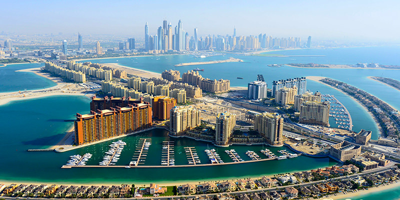

In recent years, autonomous drones have begun to transform various application areas as they can fly beyond visual line of sight (BVLOS) while maximizing production, reducing costs and risks, ensuring site safety, security and regulatory compliance, and protecting the human workforce in times of a pandemic. They can also be used for consumer-related missions like package delivery, as demonstrated by Amazon Prime Air, and critical deliveries of health supplies.
There are numerous civilian, commercial, military, and aerospace applications for UAVs.These include:
General
Disaster relief, archeology, conservation of biodiversity and habitat, law enforcement, crime, and terrorism.
Commercial
Aerial surveillance, filmmaking, journalism, scientific research, surveying, cargo transport, mining, manufacturing, Forestry, solar farming, thermal energy, ports and agriculture.
Warfare
With extensive cost reductions and advancements in the UAVs technology, the defense forces around the globe are increasingly using these for various applications such as surveillance, logistics, communication, attack and combat.
For intelligence and reconnaissance missions, the inherent stealth of micro UAV flapping-wing ornithopters, imitating birds or insects, offers potential for covert surveillance and makes them difficult targets to bring down.
Reconnaissance, attack, demining, and target practice.
Aerial photography
Drones are ideally suited to capturing aerial shots in photography and cinematography, and are widely used for this purpose. Small drones avoid the need for precise coordination between pilot and cameraman, with the same person taking on both roles. However, big drones with professional cine cameras, there is usually a drone pilot and a camera operator who controls camera angle and lens. For example, the AERIGON cinema drone which is used in film production in big blockbuster movies is operated by 2 people.

Agriculture and forestry
There is an urgent need for more convenient and smarter agricultural solutions than traditional methods, and the agricultural drone and robotics industry is expected to make progress.Agricultural drones have been used in areas such as Africa to help build sustainable agriculture.
The use of UAVs is also being investigated to help detect and fight wildfires, whether through observation or launching pyrotechnic devices to start backfires.
Law enforcement
Police can use drones for applications such as search and rescue and traffic monitoring.